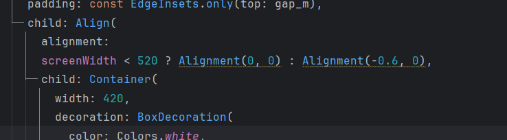

Chapter 09 모두의 숙소 앱 만들기
완성 화면


1. double.infinity

double.infinity 를 사용하면 부모 위젯의 크기 만큼 공간을 차지한다.
MediaQuery.of(context).size 를 통해 앱의 가로 길이를 디바이스의 가로 길이의 0.7 비율로 설정한다.
이는 다양한 화면 크기에서 동일한 비율로 UI 요소를 표시하여 일관된 사용자 경험을 제공하기 위함이다. 예를 들어, 큰 화면에서는 UI 요소가 너무 넓어지지 않도록 하고, 작은 화면에서는 충분한 너비를 확보하도록 조정할 수 있다.
3. 선택적 매개변수(Named Parameter)
클래스의 생성자에 중괄호를 표기한다. 꼭 받아야할 변수는 required, 받기를 선택할 수 있는 변수는 변수 타입에 ? 를 붙여 nullable(null이 될 수 있음) 상태로 만든다.

선택적 매개변수를 사용해면 부모 위젯에서 변수를 전달받을 때 키 : 값의 형태로 전달받을 수 있고, 원하는 값을 선택적으로 받을 수 있어 편리하다.

공통 formField를 만든 후 변수를 선택적 매개변수로 받는다.
부모 위젯은 같은 컴포넌트에 변수만 다른 값을 전달한다.

하나의 컴포넌트를 활용해 화면을 구성할 수 있다.
4. Align 위젯

Alignment 의 기본 값으로 배치할 수 있다.


자식 위젯의 위치를 직접 지정할 수도 있다.

삼항연산자를 사용해 디바이스의 가로 길이가 변경됐을 자식 위젯의 위치를 동적으로 변경할 수 있다.

사이즈가 클 때는 부모 위젯의 왼쪽에 위치하지만 사이즈가 줄어들면 부모 위젯의 가운데에 위치하도록 한다.

5. Wrap 위젯

자식 위젯을 Row로 배치하면 가로 길이가 작아졌을 때 overflowed 오류가 발생하게 된다.


Wrap 위젯을 사용하면 사이즈가 줄어도 자동으로 교차 축 정렬이 된다.